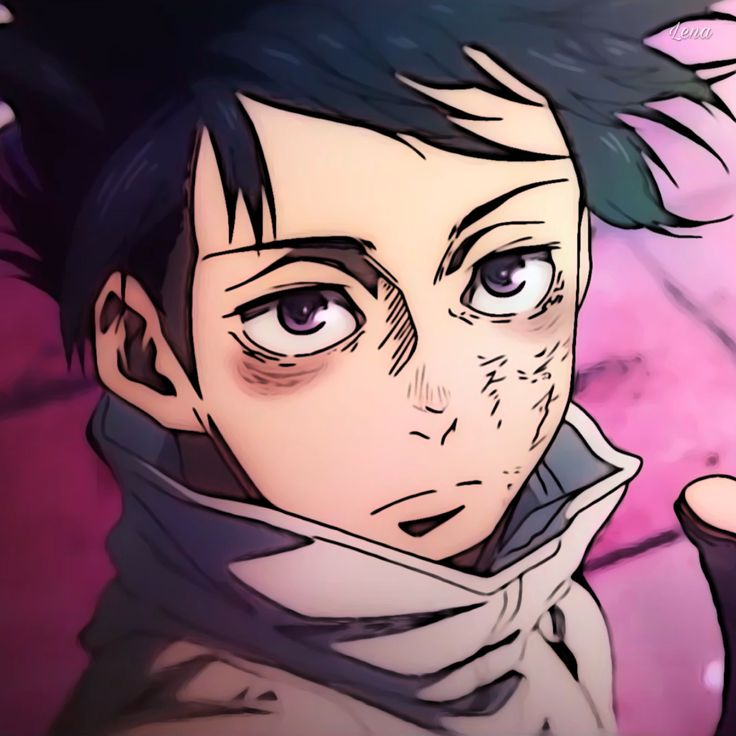
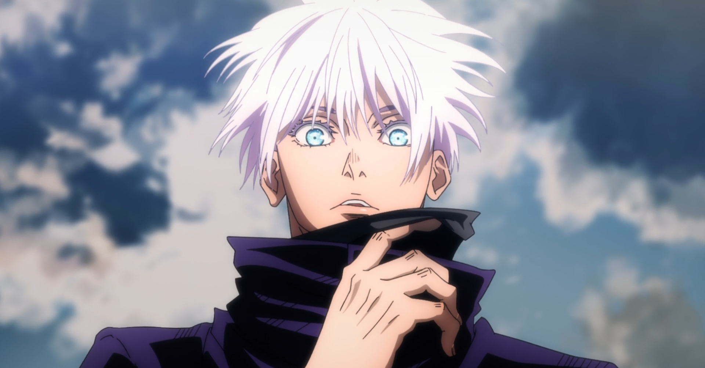
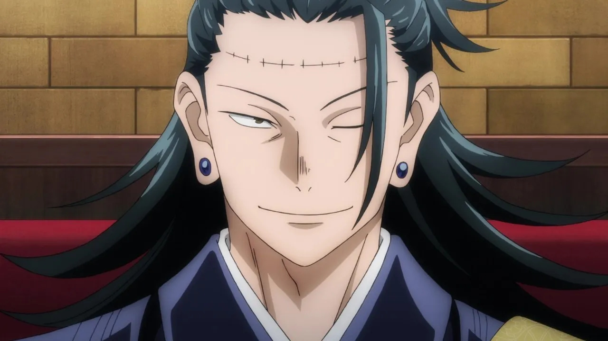
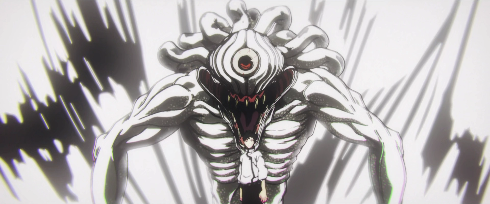

Jujutsu Kaisen 0
Enter the fascinating world of Jujutsu Kaisen 0 and be transported to a supernatural realm where curses and sorcery collide. This anime series has captured the hearts of viewers worldwide, thanks to its captivating story, unforgettable characters, and impressive animation. If you’re looking for an adventure that combines high-stakes battles with intricate world-building, then Jujutsu Kaisen 0 is the anime for you. Join Yuta Okkotsu and his friends as they unravel the mysteries of the Tokyo Metropolitan Magic Technical School and the supernatural forces that threaten the world.
Yuta Okkotsu
 Click here for more information about him!
Satoru Gojo
 Click here for more information about him!Suguru Geto
 Click here for more information about him!Rika Orimoto
 Click here for more information about her!Yuta Okkotsu is haunted by the spirit of his childhood friend Rika, who died in a tragic traffic accident. Her spirit no longer appears as the sweet girl he called his beloved. Instead, her spirit has been cursed and she manifests as a monstrous entity who protects him against his will.- Unable to control Rika's immense power, Yuta is helpless to stop the bloodshed caused by his curse. As a result, Yuta is apprehended by Jujutsu Sorcerers, secret guardians of the world who are trained to combat Cursed Spirits like Rika. Yuta wishes to die in complete isolation so no one else can get hurt, but Satoru Gojo offers him a different path. Gojo has Yuta join Jujutsu High, where he studies with other sorcerers in training in order to control Rika in hopes of helping other people. Now a first-year, Yuta learns Jujutsu and combat arts alongside his new peers: Maki Zenin, a Cursed Tools user, Toge Inumaki, a Cursed Speech user, and Panda, a seemingly talking panda bear. Thanks to connections made with friends and finding his place at Jujutsu High, Yuta begins to gain the confidence to feel alive. He even begins to become comfortable with his abilities. However, as the training progresses Yuta learns that the dangers of the Jujutsu World go far beyond that of evil spirits.